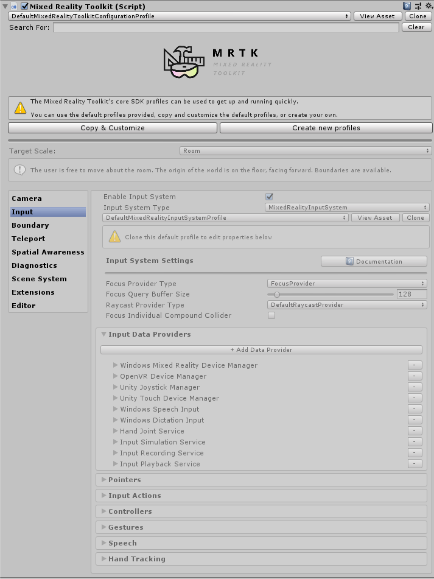

Profiles
MRTK を設定する主な方法の一つは、foundation パッケージに含まれる多数の Profile を使用することです。 メインとなる MixedRealityToolkit オブジェクトは Profile を持っており、これは実装としては ScriptableObject で、他の ScriptableObject への参照を含みます。参照される各 ScriptableObject は MRTK の各機能を設定するようデザインされています。
例えば入力機能の設定はinput の Profile にまとめられています。 Profile の編集にはエディターのインスペクタを使用することをお勧めします。

Profile Inspector
Note
今後、実行時に Profile が変更可能になる予定ですが、現状は対応していません。- 参考
Default Profile
MRTK は様々なプラットフォームとシナリオをサポートするデフォルトの Profile を提供します。例えば、 DefaultMixedRealityToolkitConfigurationProfile を選択すれば VR (OpenVR, WMR) と HoloLens(1, 2) 両方に対応したシナリオを試すことができます。これは幅広い用途のための Profile なので、特定のユースケースに最適化されてはいないことに注意してください。もし他のプラットフォーム向けに、より高パフォーマンスで特化した設定にしたければ、以下の他のプラットフォーム向けに調整された Profile を確認してください。
HoloLens 2 Profile
MRTK は HoloLens2 上での開発・テストに最適化された Profile を提供します。 DefaultHoloLens2ConfigurationProfile. MixedRealityToolkit オブジェクトに Profile を設定するよう表示されたら、デフォルトではなくこちらを選択してください。
HoloLens2 向けとデフォルトの主な違いは以下の通りです。:
- Boundary System が無効になっています( AR には Boundary ( VR のエリア境界線)がないため)
- Teleport System が無効になっています(主に VR のコンセプトです)
- Spatial Awareness System が無効になっています。 Spatial Meshes は描画されませんが、 この資料に従ってオンにできます。 Spatial Meshes はクライアントからのフィードバックによりデフォルトではオフになっています。最初は視覚的に興味深いのですが、見た目の紛らわしさやパフォーマンス上の理由から通常はオフにされています。
- Eye tracking provieder とその設定は有効になっています。
- Eye simulation はデフォルトで有効になっています。
- Hand mesh visualization は無効になっています(パフォーマンス上の理由により)
- Camera の Profile はエディター上のクオリティとデバイス上のクオリティが同じになるように設定されています。(これは Opaque ディスプレイが高いクオリティになるように設定された、デフォルトの Camera の Profile とは異なります。この変更によりエディター上でのクオリティは下がりますが、実際のデバイスに描画される結果により近いものになります。)